library(FANR6750data)
library(ggplot2)
data("thrushdata")
str(thrushdata)
#> 'data.frame': 100 obs. of 2 variables:
#> $ calls: num 9.1 5.7 7.7 14.9 12.3 16.7 17.8 11.6 7.5 14.3 ...
#> $ wind : chr "high" "high" "high" "high" ...Lab 3: Using R to explore sampling error
FANR 6750: Experimental Methods in Forestry and Natural Resources Research
Fall 2026
Lab 2
Introduction to RMarkdown
Introduction to RProjects and directories
Submitting HWs
Today’s topics
Introduction
Data visualization using
ggplot2Using
forloops to explore samplingMore on confidence intervals
Assignment
Introduction
Today we will dive deeper into several key topics from lecture related to statistical inference. In particular, we will use R explore concepts related to sampling, sampling error, and sample size. In doing so, we will also learn (or reinforce) some new skills in R, including:
Data visualizationg using
ggplot2Using R’s built in functions to randomly generate samples from probability distributions
Using
forloops to repeat code many times
Graphics
R has very powerful graphing capabilities that make it possible to create data visualizations for reports or publications. Before we get started on today’s material, we will introduce a few ways to visualize data. As with most tasks in R, there are many ways to create graphs and you will find that people have very strong feelings about the best approach.
The debate over graphics in R usually boils down to using the built-in graphing functions (“base graphics”) vs the ggplot2 package. There are some advantages to both approaches, but for the most part the newer generations of R users prefer ggplot2. Therefore most of the sample code provided in lab will reflect that preference. However, I don’t care how you make your plots as long as they effectively display the information you are trying to convey. If you prefer base graphics, by all means use base graphics.1
For this exercise, we will use a small data set that comes with the FANR6750data package:
The data frame contains two columns: calls is the average number of calls made by birds during a brief sampling period and wind indicates whether there was high or low wind during each sample.
Brief introduction to ggplot2
Because the code I provide will use ggplot2, it is worth briefly learning/reviewing how this package approaches data visualization.
The power and flexibility of ggplot2 come from it’s consistent structure. Although a bit confusing at first, once you get the hang of it, the structure actually makes it quite easy to create highly customized visualizations. All plots created using ggplot2 use the same underlying structure:
\[\underbrace{ggplot}_{initiate\; plot} ( \underbrace{data = df}_{data\;frame},\; \underbrace{aes(x =\; , y = \;)}_{plot\; attributes} ) + \underbrace{geom\_line()}_{geometry}\]
The ggplot() function initiates a new plot. In this function, you tell ggplot2 what data frame you will be using for the plot (ggplot only accepts data frames as input) and you tell it how to map attributes of the data to the visual properties of the figures. Attributes are mapped inside the aes() argument. Attributes usually include location (x-axis and y-axis placement), color, size, shape, line type, and many others. In general, each attribute will be mapped to one column of your data frame.
The ggplot() function simply initiates a graph - if you run just that portion of the code you will get a blank graph. We can see that by creating a plot showing the relationship between wind (the x-axis of the plot) and calls (the y-axis):
ggplot(data = thrushdata, aes(x = wind, y = calls))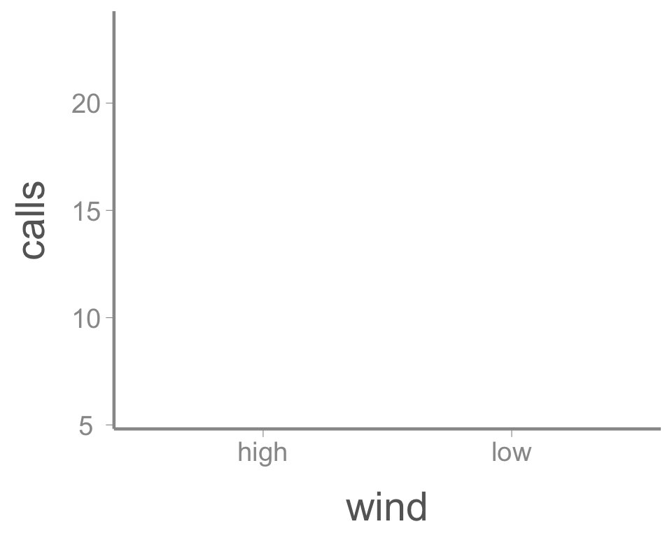
You can see that ggplot created a figure with the correct axes and labels. But no data. That’s because we didn’t tell ggplot what type of geometry to use to represent the data. Once we add a geometry, we can see the data:
ggplot(data = thrushdata, aes(x = wind, y = calls)) +
geom_point()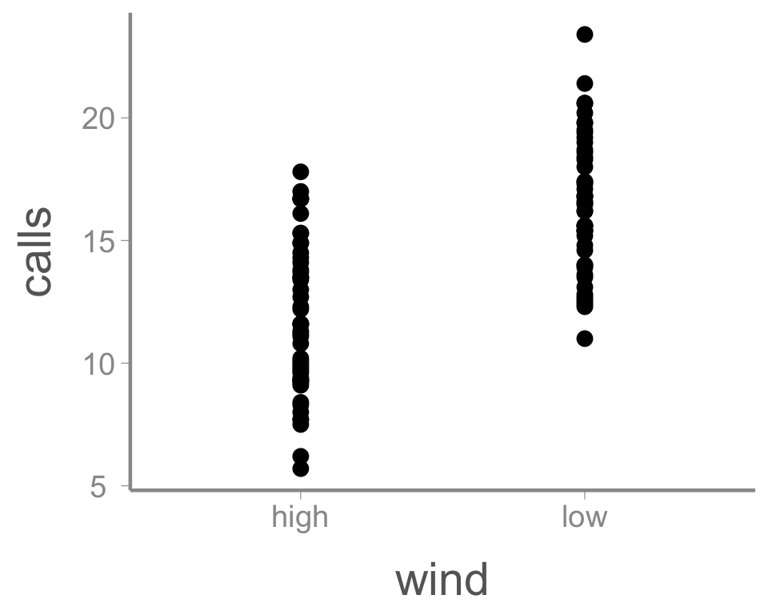
In this case, a boxplot might make more sense:
ggplot(data = thrushdata, aes(x = wind, y = calls)) +
geom_boxplot()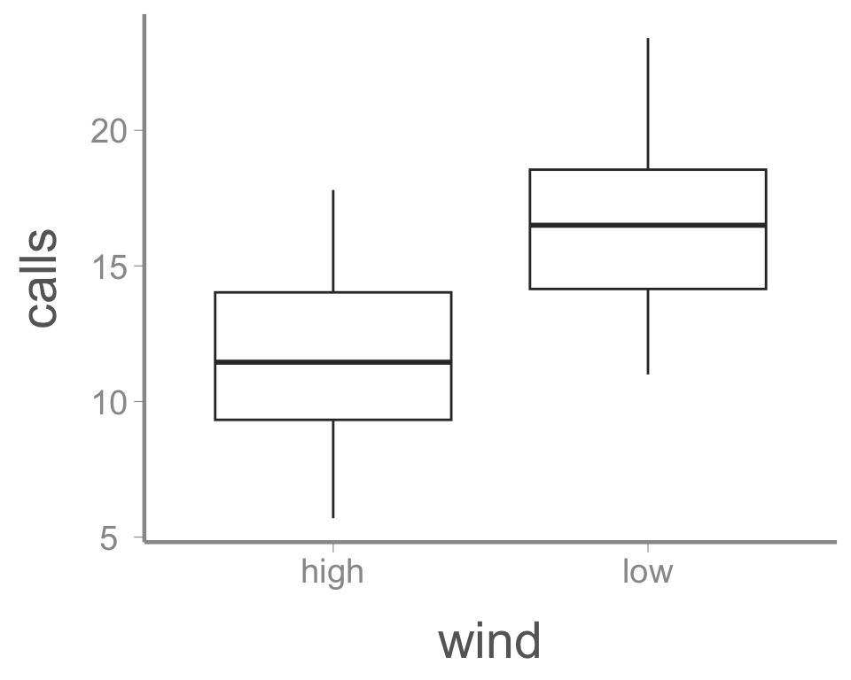
It’s also possible to use more than one geometry:
ggplot(data = thrushdata, aes(x = wind, y = calls)) +
geom_boxplot() +
geom_point()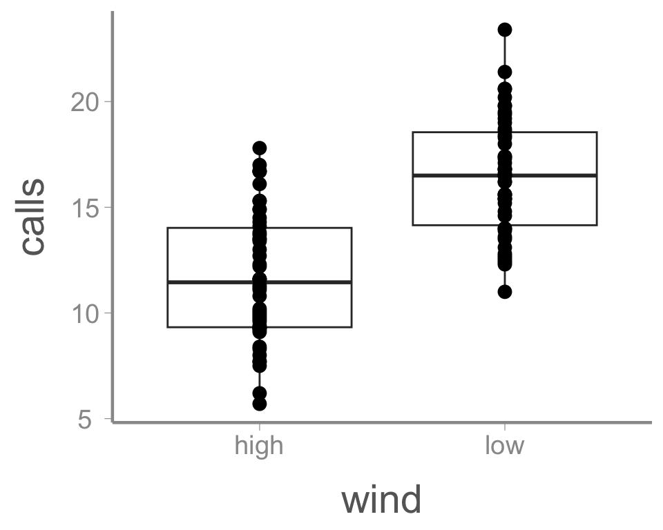
This is reasonable figure showing call frequencies as a function of wind. But ggplot2 makes it very easy to tweak the way the data is visualized (maybe too easy, you can spend a lot of time tweaking minor details). For example, maybe we want to color the points based on the wind. Because we want to map an attribute (color) to a variable (wind), we make this change inside of aes:
ggplot(data = thrushdata, aes(x = wind, y = calls, color = wind)) +
geom_boxplot() +
geom_point()That’s not exactly what we wanted. Both the boxplot and the points now colored a function of wind. To make just the points a function of wind, we specify color = wind inside of the geom_point() function (anything in the ggplot() function will apply to all geoms):
ggplot(data = thrushdata, aes(x = wind, y = calls)) +
geom_boxplot() +
geom_point(aes(color = wind))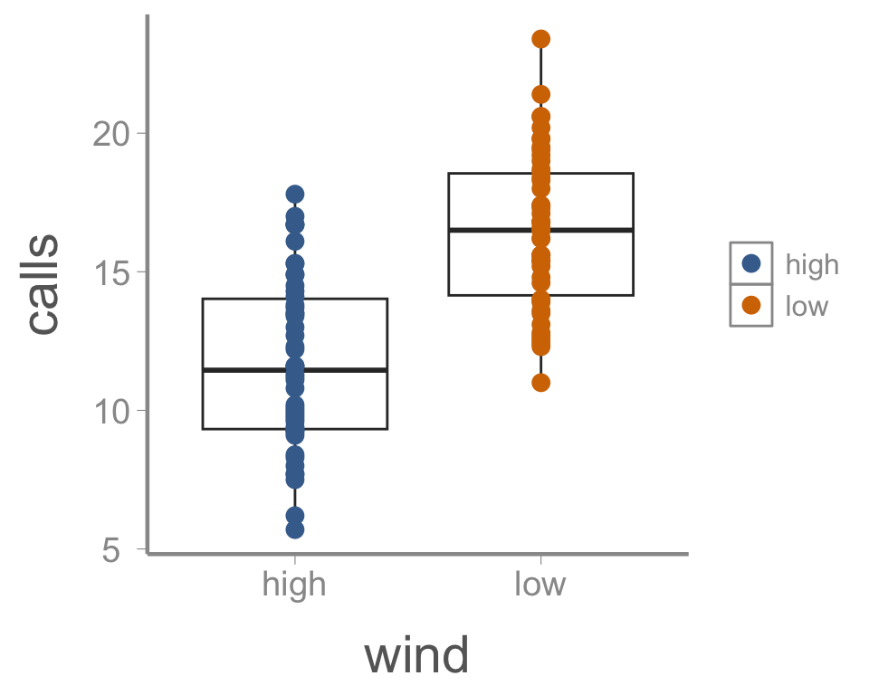
We can also do things like the change the size of the geometries. In this case, we are not mapping a variable to an attribute (size is not a function of the data values). So these changes happen outside of the aes() argument:
ggplot(data = thrushdata, aes(x = wind, y = calls)) +
geom_boxplot() +
geom_point(aes(color = wind), size = 5)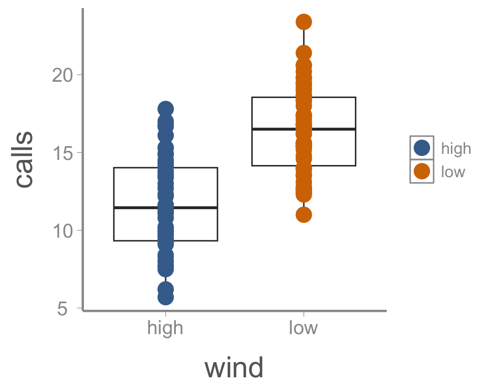
One last example. Because many of the points overlap, it can be hard to tell how many individual points there are in each group. One way to deal with overplotting like this is to make each point slightly transparent. We can do that with the alpha parameter:
ggplot(data = thrushdata, aes(x = wind, y = calls)) +
geom_boxplot() +
geom_point(aes(color = wind), size = 5, alpha = 0.5)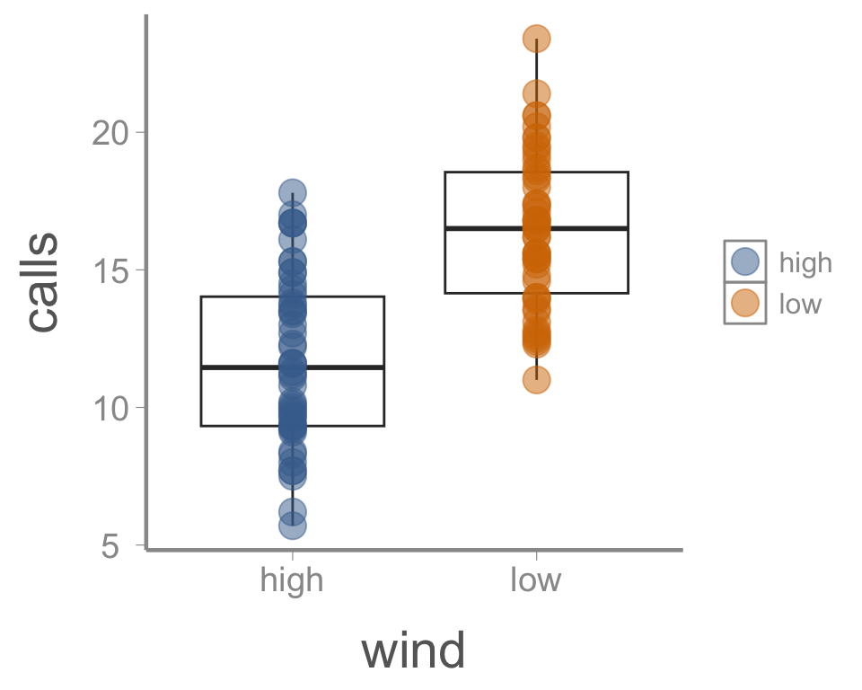
Again, because we aren’t mapping the alpha value to any data, we include it outside of aes().
Exercise 1
The graph above is fine for a quick visualization of the data but wouldn’t be appropriate for including in publications or reports. On your own,
Improve the axis labels. This could include: title case, units, font size, etc. Run
?scale_y_continuousand?scale_x_discreteif you need some help (and note the difference between these two functions!).?thememay also be usefulManually change the color of the points (
?scale_color_manual)Instead of displaying the data using a boxplot, create histograms showing the distribution of call densities at each level of wind (
?geom_histogram)
As you learn about graphics functions, whether base or ggplot2, you will probably need to look up help for how to do certain things. Google is usually your best bet but here are a few other good references:
The fantastic Fundamentals of Data Visualization book by Claus Wilke
The
ggplot2package websiteAnd, yes, even the base
Rgraph gallery
Using R to generate samples
In lecture, we discussed the concept of sampling - that is, using a randomly-selected subset of a larger population to learn about the characteristics of that population. We will explore this idea further in this lab, taking advantage of several built-in R functions that make it very easy to simulate samples.
To start, let’s assume that we are interested in quantifying the body mass of gray squirrels (Sciurus carolinensis) on campus. Because we’re simulating these data, we first need to define the true distribution of body mass (i.e., the population). For this exercise, we will assume the mean mass of campus squirrels is 500g. Furthermore, we will assume that body mass in this population is normally distributed (a reasonable assumption given the central limit theorem) with a standard deviation of 30. We can visualize the population using the code below2:
x <- seq(from = 380, to = 620, length.out = 1000)
df <- data.frame(x = x,
y = dnorm(x, 500, 30))
# Function to shade area under normal distribution
dnorm_one_sd <- function(x){
norm_one_sd <- dnorm(x, 500, 30)
norm_one_sd[x <= 470 | x >= 530] <- NA
return(norm_one_sd)
}
p <- ggplot() +
stat_function(fun = dnorm_one_sd, geom = "area", fill = "#446E9B", alpha = 0.3) +
geom_segment(aes(x = 500, xend = 500, y = -Inf, yend = max(df$y)), color = "grey30") +
geom_path(data = df, aes(x = x, y = y), color = "#446E9B") +
guides(color = "none") +
scale_x_continuous("Mass (g)") +
scale_y_continuous("") +
theme(axis.text.y = element_blank(), axis.ticks = element_blank()) +
annotate("text", label = "mu", parse = TRUE, x = 500, y = max(df$y) + 0.0013)
p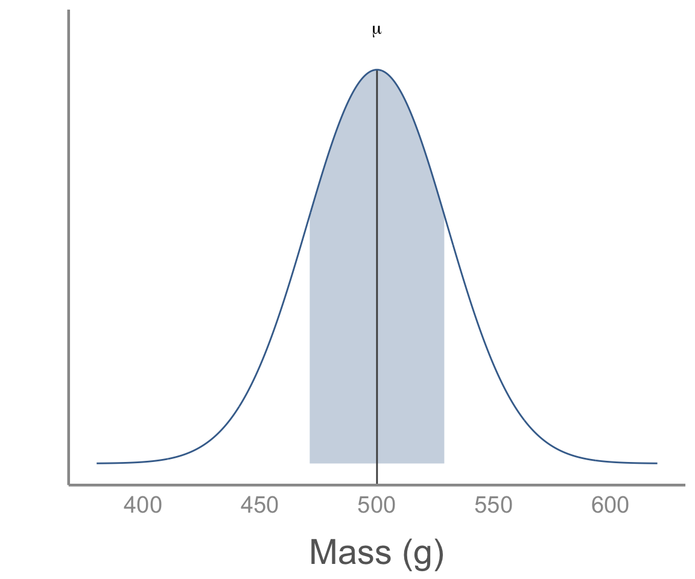
Sampling from this population is simple using the built in rnorm() function. R has a number of built-in functions to randomly generate samples from a range of probability distributions (that’s what the r stands for in the function name). In addition to rnorm(), there is rpois() (Poisson distribution), rbinom() (binomial distribution), runif() (uniform distribution), etc.
As with any function, you can run ?rnorm() to get more information about the arguments required to run this function. Briefly, we need to define
x: the number of random numbers to generate, i.e. the sample size)mean: the mean of the normal distribution (in this case, the population mean of 500)sd: the standard deviation on the normal distribution (in this case 30)
Let’s start with a sample size of 15:
#> [1] 530.0 464.3 492.4 526.0 500.0 560.2 502.7 460.2 489.0 529.9 472.1 532.7
#> [13] 534.9 525.1 476.6samp <- rnorm(15, 500, 30)
sampExercise 2
Question: What are the expected values for the mean and standard deviation of our sample?
Use R to calculate the mean and standard deviation of the sample. How close were they to the expected values?
We can also visualize how this sample compares to the population by adding it to our previous plot3:
samp_df <- data.frame(x = samp)
p2 <- p +
geom_rug(data = samp_df, aes(x = x)) +
geom_segment(aes(x = mean(samp), xend = mean(samp), y = -Inf, yend = dnorm(mean(samp), 500, 30)), color = "grey30", linetype = "longdash") +
annotate("text", label = "bar(y)", parse = TRUE, x = mean(samp), y = dnorm(mean(samp), 500, 30) + 0.001)
p2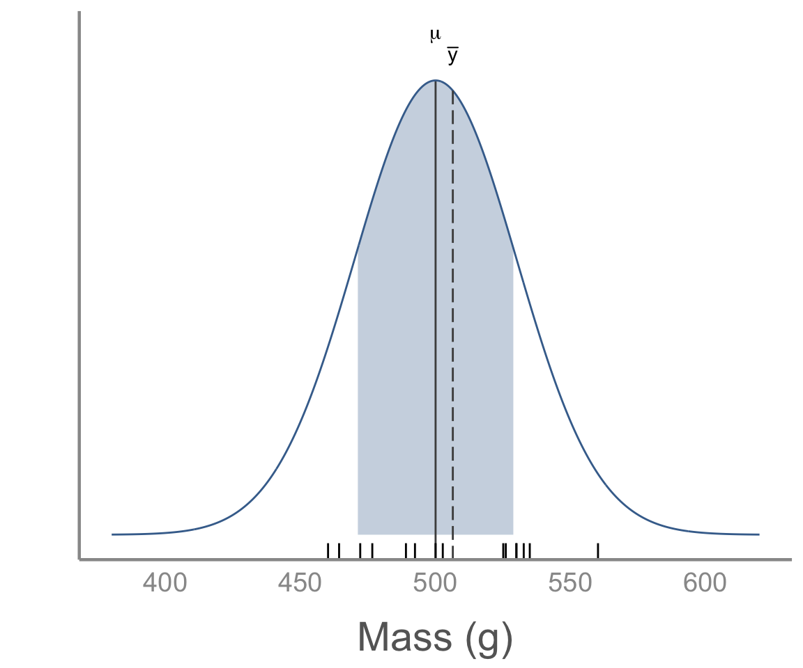
Remember that because this is a random sample, your sample will be slightly different from the one shown here.
Exploring variability among samples
One of the most foundational topics for everything we will learn about this semester is sampling error. Sampling error stems directly from the fact that sampling is an inherently random process and therefore no two samples will be exactly the same (and no sample will exactly resemble the population from which it is drawn). Although straightforward, this simple fact will form the basis of nearly every topic we discuss this semester. In fact, this is the reason we need statistics in the first place!
To explore the concept of sampling error in more detail, and to build some intuition for how sampling error influences conclusions from our samples, we will expand on the previous exercise by generating a very large number of samples from the population.
In the real world, of course, we generally only have a single sample. But R makes it easy to explore what we would see if we could repeat our sampling process many times. This is essentially the entire basis of frequentist statistics
To repeat the sampling process we implemented above, we could just copy and paste the samp <- rnorm(15, 500, 30) code over and over again, each time naming the sample object something different:
samp1 <- rnorm(15, 500, 30)
samp2 <- rnorm(15, 500, 30)
samp3 <- rnorm(15, 500, 30)
.
.
.
sampN <- rnorm(15, 500, 30)But that is obviously inefficient for more than just 2-3 samples. Anytime you find yourself needing to repeat the same code many times, you could consider using a loop.
In R, for loops allow us to efficiently4 repeat code as many times we want. To run a for loop, we will first specify how many times we want to run the loop and also create an empty matrix that will store the samples that are created each time we run the loop.
n <- 15 # sample size
nsamp <- 1000 # number of samples
samp_mat <- matrix(NA, nrow = n, ncol = nsamp)The syntax of the loop itself will always start with the function for(). Inside the parentheses, the first thing we add is a counter, which is essentially just a symbol we will use to keep track of which iteration of the loop we are on. By convention, we will use i as our counter, though we could make it pretty much anything we want (e.g., j, k, etc5). After defining the counter, we add in and then a sequence of values the counter will take each time it runs the loop. We want to run the loop 1000 times so we generate a sequence from 1 to 1000. After defining the counter and sequence, we put all of the code we want to run inside of curly brackets:
for(i in 1:nsamp){
samp_mat[,i] <- rnorm(n, 500, 30)
}Note that each time the loop runs, any place you see the counter i inside the curly brackets, R will replace i with the values specified in sequence 1:nsamp (the first loop, i = 1, the second loop i = 2, etc). The code inside of the loop uses some of the indexing rules we learned several weeks ago. Be sure you understand how this indexing works, particularly in relation to the counter i.
Because the counter symbol and the sequence are flexible, the following code all does the same thing:
for(j in 1:nsamp){
samp_mat[,j] <- rnorm(15, 500, 30)
}
for(samp in 1:nsamp){
samp_mat[,samp] <- rnorm(15, 500, 30)
}
samps <- 1:nsamp
for(i in seq_along(samps)){
samp_mat[,i] <- rnorm(15, 500, 30)
}The samp_mat object we just created contains 1000 samples from our hypothetical population of squirrels, each containing 15 observations. Although we expect the mean of each sample to be 500, we know that there will be variation among the 1000 sample means (this is sampling error!).
To explore how much variation there is among our sample means, we first need to calculate the mean of each sample. We could do this a few ways. First, we could use a loop6:
samp_means <- numeric() # object to store sample means
for(i in 1:nsamp){
samp_means[i] <- mean(samp_mat[,i])
}This works perfectly well, though because loops can be slow, many advanced users try to avoid them when possible. R has another built-in function called apply() that can be very useful for avoiding loops when we need to apply the same function to each row or column of a matrix:
samp_means <- apply(X = samp_mat, MARGIN = 2, FUN = mean)The first argument X is a matrix and the argument FUN is the function we want to apply to each row or column of the matrix. The MARGIN argument is the dimension we want to apply the function to (1 = row, 2 = column). So in this case, we are telling R to take the mean of each column of samp_mat. Apply will return a vector with the mean of each column.
Let’s visualize the distribution of the 1000 sample means:
p3 <- p +
geom_histogram(data = data.frame(x = samp_means), aes(x = x, ..density..),
fill = "grey50", alpha = 0.5, binwidth = 10)
p3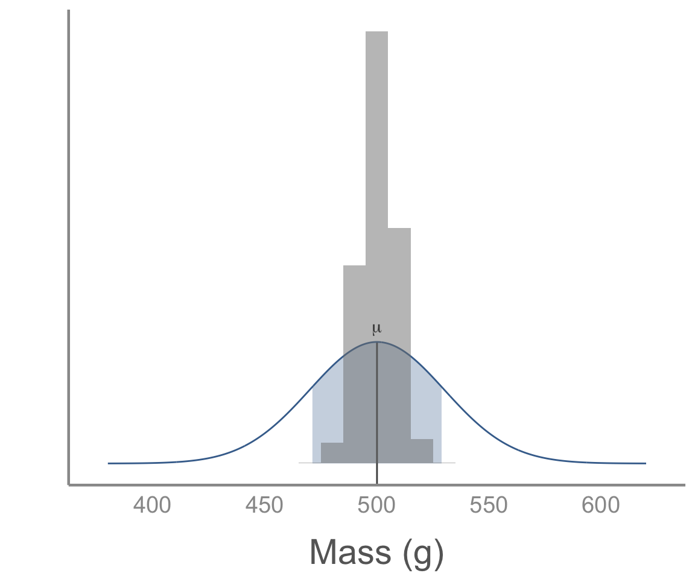
What do you notice about the distribution of sampling means?
We can also calculate summary statistics from our sample means:
mean(samp_means)
#> [1] 500.4
sd(samp_means)
#> [1] 7.746What do you notice about the mean of the sample means?
What is the interpretation of the standard deviation of the sample means?
As you may have figured out, we just used R to approximate the sampling distribution, i.e., the means of a large number of samples from the same population. Thanks to the central limit theorem, the mean of the sample means is the population mean (or, in this case, very close to the population mean since 1000 is large but not infinite).
More importantly, the standard deviation of the sample means tells us on average how far each sample mean is from the population mean, i.e., the standard error. You can prove this to yourself by calculating the standard error of the first sample we took and comparing it to the standard deviation of the sample means:
sd(samp)/sqrt(length(samp))
#> [1] 7.798
sd(samp_means)
#> [1] 7.746Again, these values should be close but will not be equal. Why won’t they be equal? What factors influence how close they are to each other?
Exercise 3
On your own, change the sample size and rerun the previous code. Note that all you need to do is change n <- 15 to another value and re-run the code. Run smaller sample sizes (e.g., n <- 5) and larger sample sizes (e.g., n <- 30). What happens to the sampling distribution and the standard error?
Confidence intervals
We can also use the concepts we just learned to better understand how confidence intervals are calculated and what they represent.
Let’s quickly review a few properties of normal distributions. First, ~68% of samples from a normal distribution will fall within 1 SD of the mean. For our squirrel population, this means that ~68% of squirrel body masses fall within the range 470g-530g. This is the dark shaded area below:
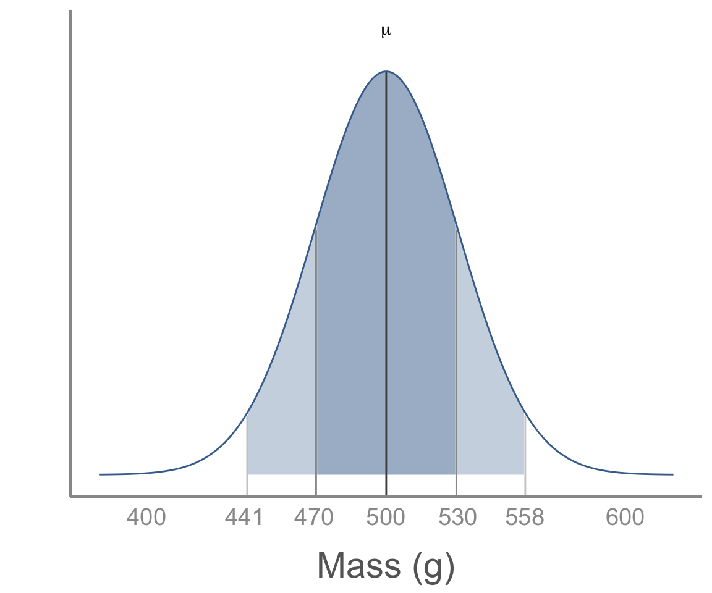
It is also true that 95% of samples will fall within ~1.96 x SD of the mean. For our squirrel population, this means that ~95% of squirrel body masses fall within the range 441.2g-558.8g. This is the dark shaded area above.
In the above graph, we are visualizing the distribution of body masses for individual squirrels as a way to learn about the properties of normal distributions. But when we sample, we are (usually) not trying to learn about individual squirrels, but instead about the population mean.
How does this relate to confidence intervals?
Remember that the sampling distribution is a normal distribution. If we denote the mean of sampling distribution \(\mu_{\bar{x}}\) and standard deviation as \(\sigma_{\bar{x}}\), this means that ~95% of sample means will fall within the range \(\mu_{\bar{x}} - 1.96 \times \sigma_{\bar{x}}\) - \(\mu_{\bar{x}} + 1.96 \times \sigma_{\bar{x}}\). Stare at that sentence for a few minutes until it sinks in.
What is this range for our samples?
500 - 1.96 * sd(samp_means)
#> [1] 484.8
500 + 1.96 * sd(samp_means)
#> [1] 515.2So 95% of our sample means should fall within the range 484.8 - 515.2. We can use the quantile function to check whether this is the case:
quantile(samp_means, probs = c(0.025, 0.975))
#> 2.5% 97.5%
#> 485.1 515.3Pretty close!
In the real world, we never actually know \(\hat{\mu}_{\bar{x}}\) or \(\hat{\sigma}_{\bar{x}}\) so we can’t know the exact range of values our sample means should fall within. But we can estimate it from our sample!
Remember that: \(\hat{\mu}_{\bar{x}} = \bar{y}\) and \(\hat{\sigma}_{\bar{x}} = \frac{s}{\sqrt{n}} = SE\). So for given a sample, we expect that 95% of sample means should be within the interval \(\bar{y} - 1.96 \times SE\) - \(\bar{y} + 1.96 \times SE\).
For our initial sample:
y_bar <- mean(samp)
se <- sd(samp)/sqrt(length(samp))
y_bar - 1.96 * se
#> [1] 491.1
y_bar + 1.96 * se
#> [1] 521.7How do we interpret this range? Remember, it is not saying anything about the probability of population mean is between these values. In fact, in this case we can see that it makes no sense to think about probability at all. We know whether the confidence interval we just calculated includes the population mean or not. There is no probability. We can see that by visualizing the estimated sampling distribution and 95% confidence interval relative to the true population mean:
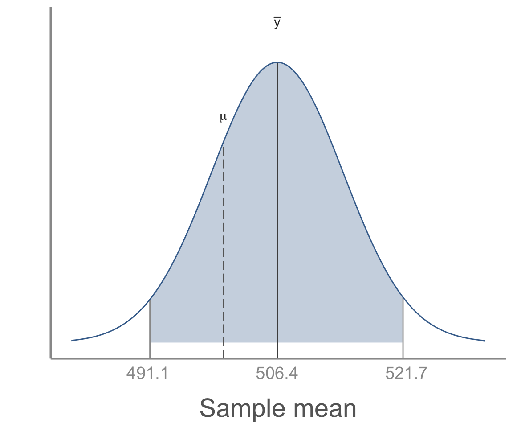
In this case, we know the population mean so we are certain whether or not it is within the confidence interval. But that is not the important point. What’s important is that after we collect a sample, the population mean is either within the confidence interval or it isn’t. Even if we don’t know the population mean, we know it’s either within the interval or it’s not.
Before we collect the sample, however, we don’t know exactly what the bounds of the confidence interval will be7. All we know is that, given the properties of the normally-distributed sampling distribution, there is a 95% probability that the confidence interval will include the population mean and a 5% probability that it won’t. Put another way, if we repeated our sampling many times, 95% of the confidence intervals will contain the population mean and 5% won’t.
But don’t take my word for it! We can actually prove that and, in doing so, hopefully clarify what confidence intervals are. We already have a large number of samples, so let’s calculate the 95% confidence interval for each one. To do this, we’ll again use a loop:
# empty objects to store lower and upper CI bounds for each sample
lci <- uci <- numeric()
for(i in 1:nsamp){
# first, calculate SE of sample
# note that we use the object n for sample size. If you changed n above, be sure it is correct here
se <- sd(samp_mat[,i])/sqrt(n)
# next, calculate bounds of CI
# again, we use the samp_means object here to index the correct sample mean. Make sure it is correct
lci[i] <- samp_means[i] - 1.96 * se
uci[i] <- samp_means[i] + 1.96 * se
}To aid visualization, let’s compile these in a data frame:
ci_df <- data.frame(sample_id = 1:nsamp,
mean = samp_means,
lci = lci,
uci = uci)
head(ci_df)
#> sample_id mean lci uci
#> 1 1 513.0 497.5 528.6
#> 2 2 494.2 477.2 511.2
#> 3 3 511.3 495.5 527.0
#> 4 4 501.6 487.5 515.7
#> 5 5 510.0 492.5 527.6
#> 6 6 487.9 469.5 506.4We can also create another column to indicate whether each confidence interval contains the true population mean:
library(dplyr)
ci_df <- mutate(ci_df, Coverage = ifelse(lci < 500 & uci > 500, "Yes", "No"))
head(ci_df)
#> sample_id mean lci uci Coverage
#> 1 1 513.0 497.5 528.6 Yes
#> 2 2 494.2 477.2 511.2 Yes
#> 3 3 511.3 495.5 527.0 Yes
#> 4 4 501.6 487.5 515.7 Yes
#> 5 5 510.0 492.5 527.6 Yes
#> 6 6 487.9 469.5 506.4 YesNow we can visualize our samples. Note that we will only look at the first 200 samples just to make things easier to see (you can change this on your own if you’d like). Also note that we are using some additional ggplot2 functions and arguments to improve the aesthetics of our graph:
# plot the mean of each sample and color based on whether CI contains population mean
ggplot(ci_df[1:200,], aes(x = sample_id, y = mean, color = Coverage)) +
# add horizontal line, corresponding to population mean
geom_hline(yintercept = 500, linetype = "dashed", color = "grey50") +
# add CI for each sample; make each bar semi-transparent to make them easier to see
geom_errorbar(aes(x = sample_id, ymin = lci, ymax = uci), alpha = 0.6, width = 0) +
# add sample means; make each point semi-transparent to make them easier to see
geom_point(alpha = 0.75) +
# change the y-axis title to be more informative
scale_y_continuous("Sample mean") +
# set the colors manually so that No = red, Yes = black
scale_color_manual(values = c("red", "black")) +
# turn off x-axis text, tick marks, and title since it is cluttered and not relevant
theme(axis.text.x = element_blank(),
axis.ticks.x = element_blank(),
axis.title.x = element_blank())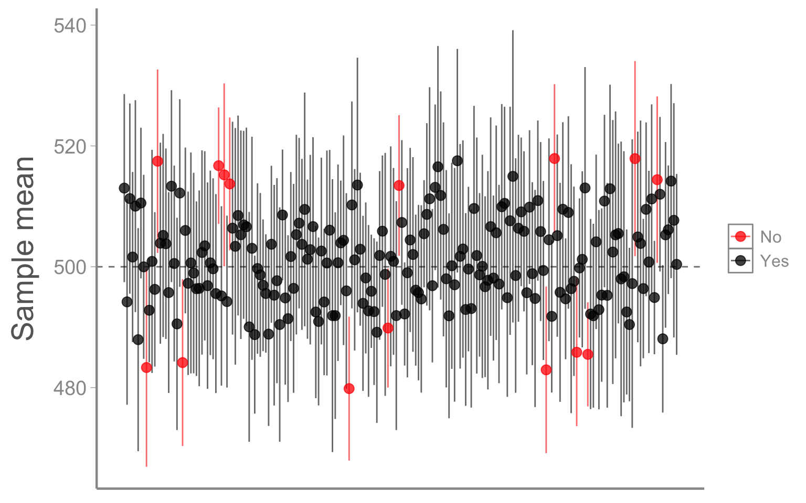
Of the 1000 total intervals, what proportion do you think are black?
coverage <- ifelse(ci_df$Coverage == "Yes", 1, 0)
mean(coverage)
#> [1] 0.933Of course, for your sample that forms the basis of your thesis, you have no way of knowing whether you are of the black points or one of the red points. :)
Exercise 4
By convention, most people calculate and report 95% confidence intervals. But there is nothing magical about 95% and we can calculate confidence intervals for any percentage we think is relevant to our inference.
For example, 80% of a normal distribution falls within ~1.281 standard deviations of the mean. Based on this information:
Calculate the 80% confidence intervals of the 1000 samples from our population
Add the 80% confidence intervals to the graph we created above. Use a slightly thicker line for the 80% intervals than you did for the 95% intervals so you can see the limits of both intervals (hint -
geom_errorbar()has asizeargument). It may help to limit your graph to a smaller number of samples (e.g., 100)
How do the 80% confidence intervals compare to the 95% confidence intervals? What are some reasons you might prefer intervals other than 95% when reporting results or making decisions based on the confidence intervals from your sample?
Assignment
In this assignment, you will build on the concepts and code from this lab to explore sampling error in more detail.
Create an R Markdown file titled “Assignment 1”. Within that document, do the following:
Create a header called “Quantifying the magnitude of sampling error” and under this header create a R chunk. Within this R chunk, create an object called
rthat contains the difference between each of the 1000 sample means and the population mean (rshould thus be a vector of 1000 numeric values). Next, use ggplot2 to create a histogram of these values. Below the chunk, explain what the values in this histogram represent. In your answer, indicate what the expected value ofris and what positive vs negative values indicate about each sample.Create a header called “Standardizing the magnitude of sampling error” and under this header create another R chunk. Within this chunk, calculate the standard deviation of
r. Next, create a new object (call itt) by dividing each element ofrby the standard deviation ofr. Note that you should do this using a single line of code and you should not hard code the standard deviation (in other words, use thesd()function rather than typing the actual value you calculated in the previous step). Next, use ggplot2 to create a histogram of these values. Below the chunk, explain what the values in this histogram represent, in particular what positive and negative values represent. Also, explain where the variation in these values comes from. In other words, why do the samples not all have the same value?A friend of yours from another university also happens to be studying gray squirrels (what are the chances!) and claims that their squirrels are bigger than your squirrels. This friend has a history of exaggeration and you certainly don’t want them to think their squirrels are better than your squirrels, so you are skeptical. You ask your friend to capture and weigh 15 squirrels on their campus and send you the data, which is included below:
new_data <- c(575.5, 513.1, 509.4, 527.1, 485.6, 473.9, 467.3, 535.9, 527.5,
533.4, 535.9, 516.9, 572.9, 530.3, 498.3)Create a new header called “Are their squirrels really bigger than my squirrels?” and under this header create another R chunk. Copy the new code to that chunk. Next, perform the following calculations:
the mean of the new data (call this
mu_samp)the difference between this mean and population mean of UGA gray squirrels (call this
r_samp)divide
r_sampby the standard deviation ofrthat you calculated above (call thist_samp)
Next, create a new figure that includes the histogram you created in the previous step plus a dashed, vertical bar corresponding to t_samp.
Finally, do think your friend is right? Are the squirrels on their campus bigger? Discuss how the information in this figure informs your conclusions. Remember that this assignment is focused on sampling error, so be sure your answer relates back to this concept. What does sampling error have to do with the histogram and your friend’s data?
You may use AI to help inform your answer, though if you do, you must include the full prompt(s) you used and it’s full answer(s) in a separate section at the end of this document.
- Create a new header called “Reflection”. Under this header, answer the following questions:
On a 1-10 scale, how would you rate your confidence in the topics covered in this lab?
What lingering questions/confusion about these topics do you still have?
If you used AI to help with any aspects of this lab, how well did it do? Did it help you understand the material better? Did it struggle with any specific topics?
A few things to remember when creating the document:
Be sure to include your name in the
authorfield of the headerBe sure the output type is set to:
output: html_documentBe sure to set
echo = TRUEin allRchunks so that all code and output is visible in the knitted documentRegularly knit the document as you work to check for errors
See the R Markdown reference sheet for help with creating
Rchunks, equations, tables, etc.If you use AI on any part of your assignment, you must include the full prompt(s) you used and it’s full answer(s) in a separate section titled “AI assistance” at the end of this document.
Footnotes
Keep in mind that although we will be using ggplot2, it is a good idea to have some understanding of how base
Rgraphics work. Most packages inR, when they produce some sort of output in the form of a plot, will still create that plot using baseRgraphics rather than ggplot. In order to alter those graphics without having to start from scratch, it will be useful to know a little about baseRgraphics.↩︎This code includes some fairly advanced ggplot2 options. Don’t worry too much about understanding each one, though it may be useful to spend some time figuring out what each function is doing↩︎
Notice the
pis a ggplot object, so we can add elements directly to it rather than repeat all the code needed to make the previous figure↩︎Efficient in terms of lines of code, not computational efficiency. Loops are often very slow to run so advanced R users often avoid them when possible↩︎
Remember that certain letters are also functions - e.g.,
c(),t()- so it’s good practice not to use those letters as counters↩︎In fact, we could just add a second line to our previous loop rather than run two loops↩︎
Just the like the sample mean and standard deviation, the bounds of the confidence interval are random variables and will be different for each sample↩︎